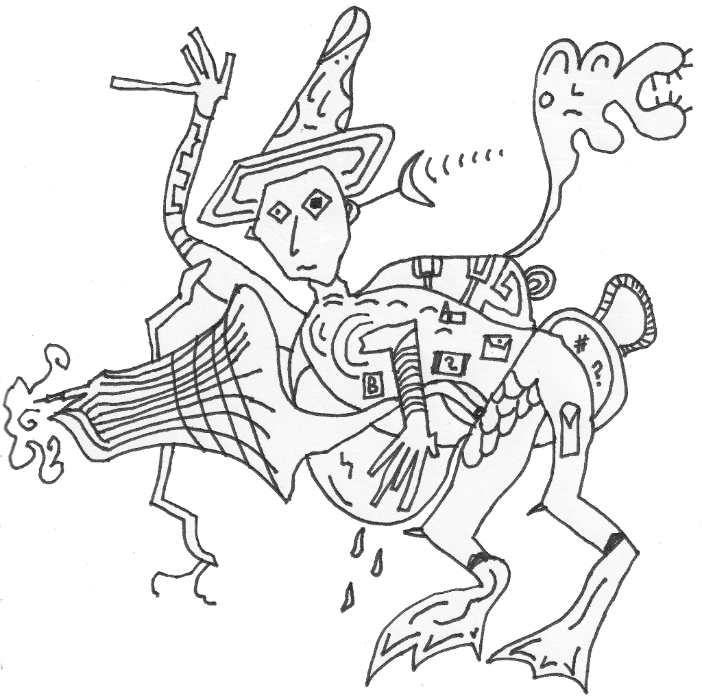
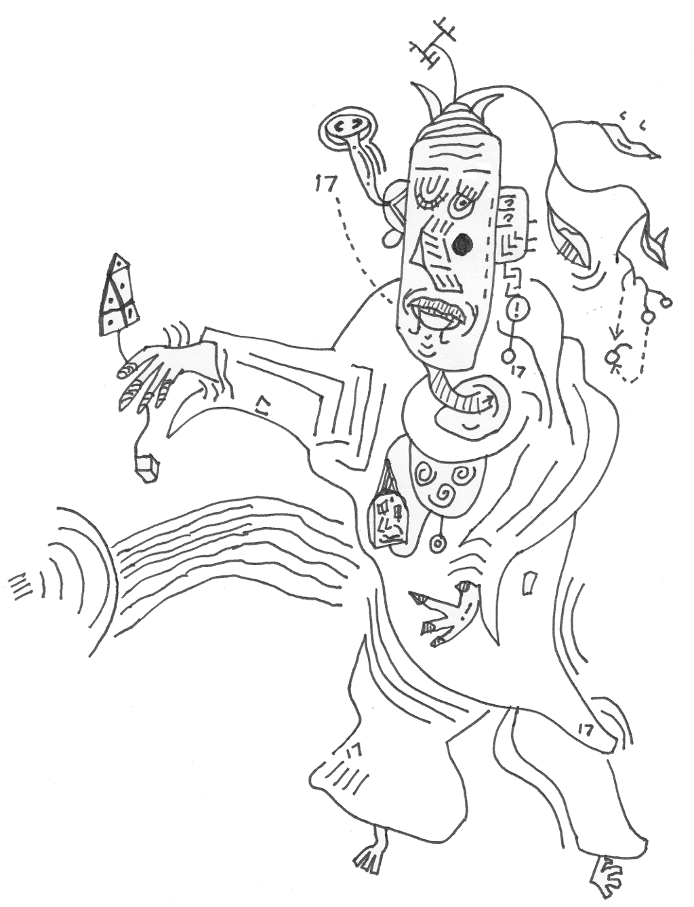
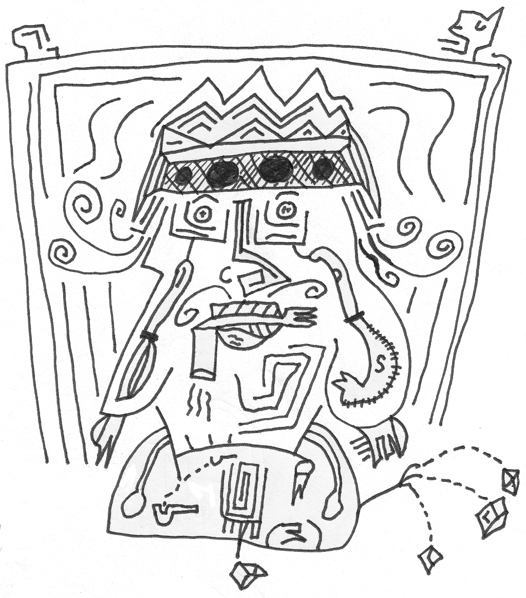
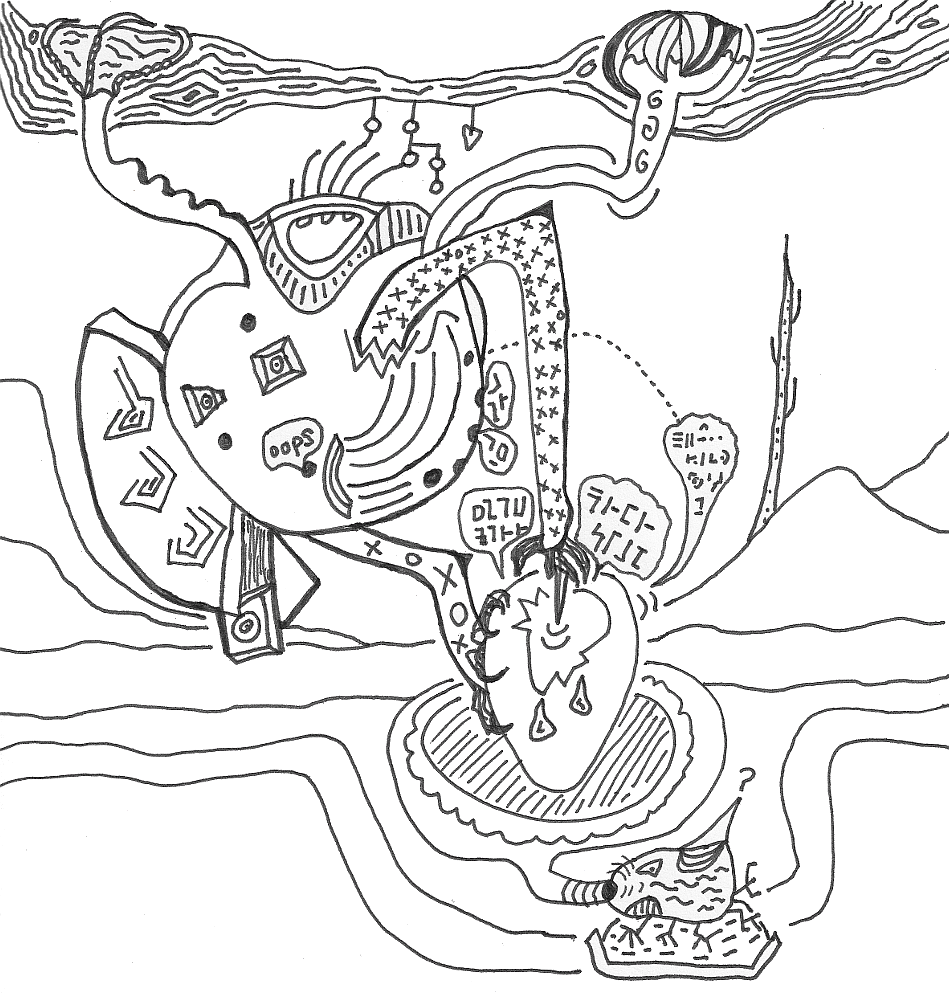
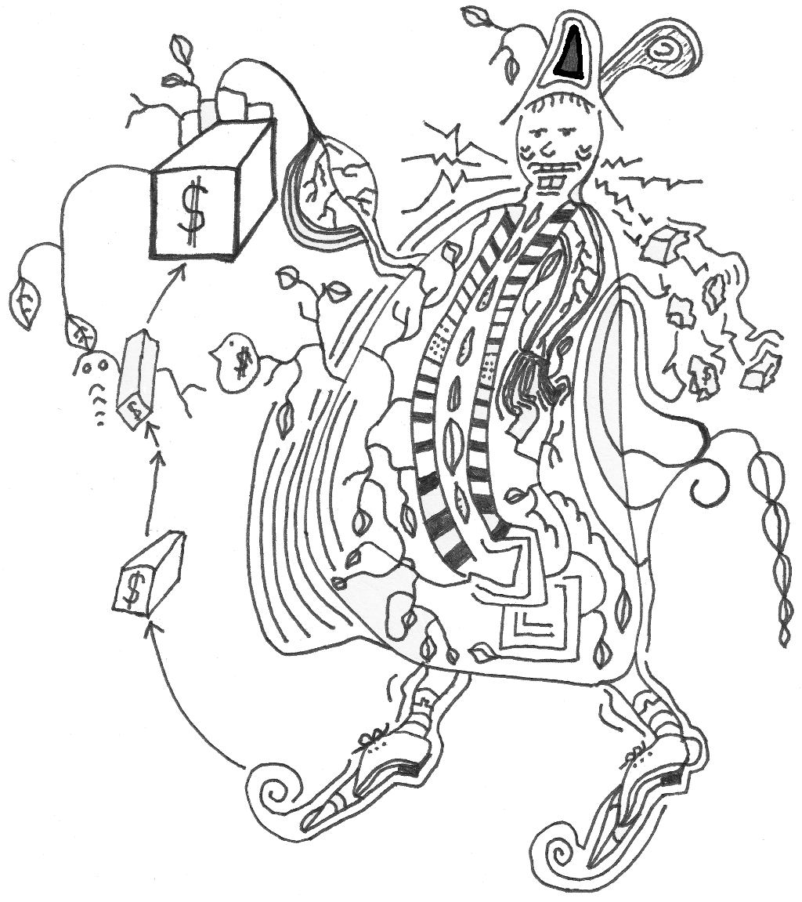

This is a setting designed for use with Troika!. I plan to expand the backgrounds over time, but decided to publish what I already have as an experiment. Enjoy!
Version: 0.0.6-20210519
All words and art by Elliot Smith, released under an Attribution-ShareAlike 4.0 International (CC BY-SA 4.0) Licence. You must include a relevant Troika! compatibility statement in any derivative works you make.
Legal text required for Troika! compatible products:
Zerocity Gazetteer is an independent production by Elliot Smith and is not affiliated with the Melsonian Arts Council.
This book was constructed using markdown, Python scripts and wkhtmltopdf.
The font used is Averia Libre.
Published by Nada Holidays, your number one choice for travelling the spheres.
Arguably The Country's most dynamic and thrilling industrial metropolis, Zerocity is also one of the most surprising. Each day, new buildings spawn in the ever-mutating landscape, nestling in a skyline of oblique palaces and historic buildings such as The Nest, The Brain Dawn Clock, and The White Cage.
Crumbling and desiccated it may be, but the city has style and survival instinct. Here, in 'the city that never breathes', you'll encounter so many dangerous and incomprehensible occurrences that you're likely to return with your life in tatters!
Photograph: a thin, fungi yellow tower whose pinnacle pierces a threatening cloud layer; the surface of the tower is decorated with mould, gargoyles, robot debris, and corpses.
Caption: The stunning Hag Acid Tower, visible from all points in Zerocity.
At the heart of the city, The Hub embraces the delicate architecture of the Fossil Zone, with its world-famous alien-built Pyramid. Inside The Pyramid there is a very real sense of impending danger. The central chamber is alive with a circus of unusual entertainers and supplicants, offering everything from disembowellings to platitudes.
From The Pyramid, countless picturesque skypaths lead into the central time dilation zone. Here, the world famous Alley Mass Generator has the unusual effect of slowing down the passage of time. Step into the field and watch your children grow old before your eyes! Or stroll the wide avenues, where light echoes of other travellers hang suspended in gravity wells.
Zerocity has a reputation as an ugly ghetto, but the reality is far from this distorted image. Surrounded by mellow hills, The Forest is a testament to the beauty of the city, and is home to the wonderfully ornate n-dimensional Hypertrees. Over 100 metres high, these miraculous extensions of other spheres into our own are a must see. The bole of each tree contains a space-time fragment that is an abstraction from one detail of this sphere.
See the popular and hysterical Nail Universe, and your life will never be the same again!
Photograph: a large man with a deathly pale face, wearing a suit; an expression of blissful lust; sharp tusks curve from his belly, through the fabric of his shirt.
Caption: The colourful psychopolyvore, one of the inhabitants of The Forest of Hyper Boles. To be avoided at all costs.
Within a 10 minute stroll of The Citadel of Germs, yet still several miles from water, The Four Palaces are fine, modern structures overlooking The Mirror Valley. Obligatory meals apply at all times of the day.
The Palace of Seed is the most pleasant of The Four Palaces, with easy access to public executions and awe-inspiring art deco festivals. Fetishes are provided most weekends in the Paralysed Ballrooms.
Or experience The Palace of Gas, taking time to explore its bubbling sphincters and almost surreal gouts of flame. There are many sealed chambers, wire enclosures and an abundance of unnatural deaths in the surrounding area.
A visit to The Palace of Dolls takes you into one of the most nauseating atmospheres you are ever likely to encounter. This is a building with only three walls, the fourth side left open to the excrutiating Mirror Valley. Meet many doppelgangers of yourself, reflected by the mirrors and made flesh by insane multi-media robots. Visit The Xerox Chamber, and see your mutated copies being grown in pustular hormone beds.
For the senile traveller, The Palace of Neurons offers a wide range of services whilst retaining a friendly atmosphere. Local facilities include euthanasia booths, brain stripping, and mind conditioning. Worth a visit if only to enjoy a temporary feeling of mental instability.
Since being designated The Zone of Endless Creativity, The Folding City has undergone a dramatic refurbishment, with many of its historical components being replaced by fictional ones. But this is not a microcity without history! There is history everywhere, from the thriving Globe Theatre, through to the Colloseum and the Louvre. The Folding City is also temporary home to many phasing monuments, including the Golden Gate Bridge, Buckingham Palace and the Eiffel Tower.
All the major celebrities pass through this fracture in space-time, including Mickey Mouse and Ronald MacDonald, both particular favourites with the children. Try to see the pained expression of ex-American presidents as they struggle to break free of their squirmholes. The miraculous psychotropic atmosphere will revitalise even the most jaded occipital lobe, delightfully drawing characters from all times and places into this remarkable geometrodynamic matrix.
Photograph: Michel Foucault having a fight with Donald Duck; the Marquis de Sade looks on as he is chained to a bed by a leering Nicolas Nickleby; the Tower of Babel looms in the hazy background.
Caption: The pervert philosopher's dreams come true in the fabulous Folding City!
Located by the terrifying bulk of Terminal, the atmospheric Abyss is situated in acres of glass desert, 10 minutes by pubic transport to The Spine. The result is more bad than good, a mysterious lack of permanence exuding from the shimmering plains.
Skim over the glass desert in a flitter to arrive at the aching chasm of the Abyss itself. Peer into the bottom and see another Zerocity, every detail perfect. Then hire a powerful telescope and try to find yourself within the replica city, peering into a replica Abyss. At the bottom of each replica Abyss is another city, with its own Abyss, ad infinitum. Why not try to resolve the enigma of which city is real?
Built haphazardly on a foundation of skeletons, The Flesh Zone is a treat for the ghoul. Without question even more fascinating since the establishment of The Church of Pork, this delightful region is a fairy tale of bio-experimental labs, living industrial machinery and grotesque monuments to meat.
Almost all the famous sites can be reached on foot, mainly by spinal conveyor belts: The Living Cranes, The Arc of Flesh, The Oedipus Complex. Take a lift to GENTEX Labs, order a new child with flippers, and enjoy panoramic views of The Spine as it winds its slimy way across the bone fields. Every meal is accompanied by the haunting chants of the Acolytes of Pork.
Peccadillos are also well catered for by The Fun Lab, where any distended configuration of human tissue can be grown on demand.
Not a castle in the traditional sense, this monumental folly serves no purpose whatsoever. It is a friendly, familiar architectural monstrosity, designed and built by idiots. Inside, the decor combines tawdry old world charm with modern distractions, encouraging the weary traveller to dissolve into the meaningless banality of manufacture.
Every visitor has a courtesy input socket fitted, enabling media drivel to be piped directly into the brain at all times. Other distortions of truth occur via the magnificient surround screens which pollute the castle. In the evening, dozens of superb but useless shiny objects trickle from spouts, giving a false promise of wealth. Watch the inhabitants of the castle, notoriously fond of defecating where they sit, unable to move due to their catatonic states. A frequent castle tour will do nothing to enlighten you.
Map: a huge symmetrical circle, divided into four by tremendous roads that radiate outwards from The Hub; a river and an artificial spine dominate the landscape; numerous labelled blocks show the positions of the locations described above.
The price of your short break to Zerocity includes:
We hope you choose to book your trip with Nada Holidays. Our flexibility in accommodating any ridiculous whim you might have makes for the break of a lifetime!
Whether for anaesthetising patients in the Flesh Zone or powering the Hag Acid Tower, Zerocity needs gas. You are one of the chancers who taps into this need, venturing Outside to find desirable gases, then channelling them to designated target locations via the monster-infested underworld.
Open air and gargantuan buildings Above terrify you. Fortunately, the Guild keeps you busy in the echoing smoky wetness Beneath. It is lonely down there, but a hat makes good company.

The gas filters in your nostrils make you immune to the effects of inhaled smoke or gas. These filters are only available to members of the Gas Channellers Guild. You can still drown in liquid.
Note: Gases do not affect entities without respiratory systems, such as simulacra, dolls, silicon entities, or certain gods.
Roll 1D6:
A plethora of other gases are available, so amend this table as you see fit.
Magic is the gift of 17 taciturn entities from beyond the spheres. They detest chatter: those who are profligate with words will never learn their secrets. During your years of listening in their baffling Pyramid, you quietly persuaded them to share their power. One succinct and hard-won spell, captured each day in 17 syllables, is now your gift to others.

Each day at dawn, you may compose a 17 syllable verse (a 5-7-5 haiku is suitable) to empower your single spell. This grants a +1 or +2 bonus to your skill with your Spell, depending on its poetic potency. You are able to cast your spell without such a verse, though it may displease the taciturn entities.
The Despotic Order of Sigilants lays claim to the depths of the Abyss. Their bright armoured skin facilitates diplomacy in the biege twilight therein: the brighter the armour, the grander the officer. While their silver flying thrones enable them to cross vast distances with ease, they can give rise to a certain lethargy of spirit, manifested as a coppery taint in the visage of waning Sigilants. Those who avoid ennui exchange sigils, employed in manipulation of weak-willed, sheep-like subjects.

The Saussure bird of the Hyper Bole forest is a biological weapon left behind by a forgotten war. Now that their natural enemies are dead, these creatures have become pests, preying on language-speaking creatures everywhere. They mostly absorb speech from the air, but have been known to extract language centres direct from the skulls of weaker animals. The grammatical spoils of this enterprise fill the word eggs which nourish the next generation of birds.
You are known to the Saussure birds as Violator. You have spent tiresome decades tracking and trapping these birds. You wield a vicious spear used to pierce word eggs; escaping speech is captured in your Grammaticon, to be sold on legal syntax markets or illegal slang ones. By now, you have heard enough speech to last a lifetime and are reticent to add to the noise, despite your proficiency with several languages.

You are a hedonistic photosynthetic priest sporting a magnificent viridian paunch. Your singular religious order, The Church of Pork, venerates consumption of everything, especially expensive manufactured goods: by such means is reality tamed. This feat is made possible by your intimidating mechanical jaw. As food grants you no nutritional benefit, you instead photosynthesise the light of dying suns through leafy appendages.

Consumption by mouth is purely devotional for members of your church and regarded as prayer: the more expensive things you consume, the holier you become. Consequently, your digestive system has been adapted to dissolve precious metals and gems, as well as plastics and wood. Instead of rations, you have the same number of small manufactured items (e.g. watches, camera obscura, compasses, cutlery), intended for consumption but providing no nutritional benefit.
You may eat normal food, though you don't require it. Instead, you subsist on sunlight. You need to sit in the sun to heal (rather than sleep), regaining 1d6 Stamina for each 4 hours of sunlight you absorb.
Once per day, if you consume stuff worth at least 5 silver pence and successfully test Gluttony, your devotion is recognised by the Lord of Pork and you are granted a boon (roll 1d6):